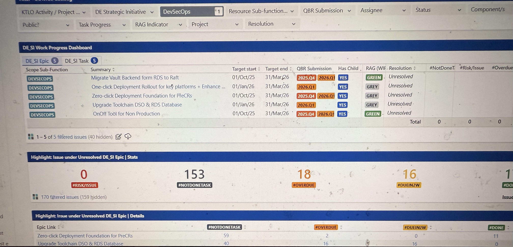

Client's requirement was to create Jira dashboard to systematically track and evaluate employee performance based on the total number of user stories handled, while also providing a unified platform to showcase monthly achievements across all teams within the line of business (LOB).
To eliminate manual tracking and improve efficiency in evaluating employee performance based on user stories in Jira and enable accurate performance weighing of employees through data-driven insights for better visibility and performance assessment
Edit and modification access is restricted to Admin for preventing any ambiguity, with only read-only and filtering access provided to all team members.
Rich Filters enhance standard dashboards by making them more interactive, dynamic, and user-friendly. Key Uses: Dynamic Filtering Real-Time Insights Improved Visualization User-Specific Views Simplified Analysis
